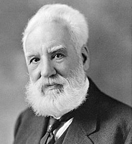

Alexander Graham Bell (Edimburgo, Escocia, Reino Unido, 3 de marzo de 1847-Beinn Bhreagh, Isla del Cabo Bretón, Canadá, 2 de agosto de 1922) fue un científico, inventor y logopeda británico, naturalizado estadounidense. Contribuyó al desarrollo de las telecomunicaciones y a la tecnología de la aviación.
Alexander Bell nació en Edimburgo, Escocia, el 3 de marzo de 1847.8 El hogar familiar estaba localizado en 16 South Charlotte Street, Edimburgo, y tiene una placa conmemorativa cerca de la puerta, señalándola como el lugar de su nacimiento. Era hijo del profesor Alexander Melville Bell y de Eliza Grace.9 Tuvo dos hermanos, Melville James Bell (1845-1870) y Edward Charles Bell (1848-1867), que murieron de tuberculosis
En 1870, Bell, sus padres y la viuda de su hermano, Caroline (Margaret Ottaway), embarcaron en el SS Nestorian hacia Canadá.3435 Después de arribar a Quebec, viajaron en tren hasta Montreal y luego a París, Ontario para reunirse con el reverendo Thomas Henderson, un amigo de la familia.
Posteriormente, su padre fue invitado por Sarah Fuller, rectora de la Boston School for Deaf Mutes (escuela para sordomudos que continua hoy como The Horace Mann School for the Deaf and Hard of Hearing),42 en Boston, Massachusetts, Estados Unidos, para entrenar a sus instructores en el «Sistema de Discurso Visible» o lenguaje de señas, pero rechazó la oferta cediéndole su lugar a su hijo. Bell viajó a
La historia de la invención del teléfono está marcada desde sus orígenes por una sucesión de litigios, acusaciones y sospechas sobre el proceder de Alexander Graham Bell respecto a la licitud de su patente. Ya en su época, debió hacer frente a más de 600 demandas de sus competidores, entre las que se pueden destacar las del inventor Elisha Gray (defendiendo la prioridad de su patente después de que caducase) y la de Antonio Meucci (un inventor de origen italiano, cuyas patentes habían desaparecido del registro). Bell siempre fue capaz de hacer valer sus derechos ante los tribunales, por lo que durante más de cien años se le ha considerado como el inventor del teléfono. Sin embargo, una resolución de la Cámara de Representantes de los Estados Unidos del año 2002, declaró a Antonio Meucci como el legítimo inventor del teléfono.